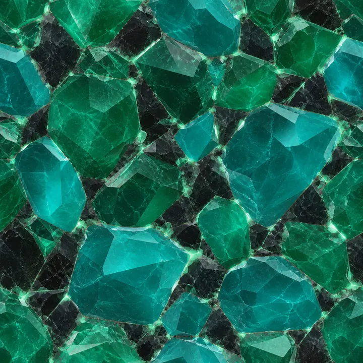

তিন ধরনের বাধার আচরণ
স্থির গেট, প্রিভিউয়ের পর ধীরে আসা গেট, এবং সরে যাওয়া, শাটার পড়া বা উল্টে যাওয়া চলমান গেট। দূরত্বের সঙ্গে ফাঁক সরু হয়।
টানেলে উড়ুন। ফাঁক খুঁজুন।
একটি এলিয়েন টানেলের মধ্য দিয়ে অন্তহীন উড়াল। দেয়াল এড়িয়ে চলুন, প্রতিটি গেটের ফাঁক দিয়ে গলে যান এবং শিল্ড চার্জ করতে ক্রিস্টাল সংগ্রহ করুন।
Unity প্রজেক্টে পূর্ণ রান লুপ, একটি হ্যাঙ্গার ও সেটিংস স্ক্রিন আছে; এখনও কোনো পাবলিক বিল্ড নেই।
টানেলের ভেতরে ঘুরতে টেনে সরান। ডেস্কটপে A ও D অথবা তীর চিহ্নের কী ব্যবহার করুন।
প্রতিটি গেটে একটি ফাঁক থাকে। রান এগোলে স্থির, ধীরে আসা ও চলমান বাধা দেখা দেয়, আর দূরত্বের সঙ্গে ফাঁক সরু হয়।
ক্রিস্টাল স্কোর ও কম্বো যোগ করে এবং একটি শিল্ড চার্জ করে, যা ডাবল ট্যাপে তোলা যায়। সংঘর্ষে রান শেষ হয়, আর সেরা স্কোর সংরক্ষিত থাকে।
স্থির গেট, প্রিভিউয়ের পর ধীরে আসা গেট, এবং সরে যাওয়া, শাটার পড়া বা উল্টে যাওয়া চলমান গেট। দূরত্বের সঙ্গে ফাঁক সরু হয়।
ক্রিস্টাল সংগ্রহ শিল্ড চার্জ করে। ডাবল ট্যাপে শিল্ড তোলা হয়।
স্কোর আসে দূরত্ব, ক্রিস্টাল, পার করা গেট ও কাছাকাছি মিস থেকে, সঙ্গে একটি কম্বো মাল্টিপ্লায়ার।
যাত্রার সঙ্গে টানেলের থিম বদলায়: ক্রায়ো নালি, বায়োমেক শিরা, রিঅ্যাক্টরের কোর ও শূন্যতার ফাটল।
চারটি কসমেটিক হাল, যা রানে সংগ্রহ করা Xeno দিয়ে কেনা যায়। এগুলো গেমপ্লেতে কোনো সুবিধা দেয় না।
সাউন্ড, অ্যাডাপটিভ মিউজিক, হ্যাপটিক্স ও কম গতি, প্রতিটি চালু বা বন্ধ করা যায়। অগ্রগতি ডিভাইসে সংরক্ষিত হয়।
এখনও প্রকাশের তারিখ নেই। এগুলো প্রজেক্টের লক্ষ্য, প্রতিশ্রুতি নয়।
প্রজেক্টের ম্যাটেরিয়াল টেক্সচার। এগুলো গেমপ্লে স্ক্রিনশট নয়।



ফোনের জন্য একটি অন্তহীন টানেল ফ্লায়ার। আপনি এলিয়েন টানেলের ভেতরে ঘোরেন, প্রতিটি বাধার গেটের ফাঁক দিয়ে যান এবং স্কোর ও শিল্ডের জন্য ক্রিস্টাল সংগ্রহ করেন। স্টুডিওর BlastBlast! এবং Vacuum Shot এগুলোও অন্তহীন, তবে এগুলো রিকয়েলে চলে; এখানে আপনি চালান।
এখনও নয়। Alien Flying একটি প্রাথমিক প্রোটোটাইপ, যার কোনো পাবলিক বিল্ড বা প্রকাশের তারিখ নেই। Android ও iOS এর লক্ষ্য প্ল্যাটফর্ম।
Alien Flying তৈরি করেছে WillowinWorlds, একটি স্বাধীন মোবাইল গেম স্টুডিও (দেখুন এর প্রধান গেমসমূহ). এই পেজের লিংক করা সোশ্যাল চ্যানেলে WillowinWorlds-কে ফলো করুন, অথবা ইমেল করুন willowinworlds@gmail.com Alien Flying-এর আপডেট জানতে।
ভোটদান স্টুডিওর চ্যানেলে খুলবে। WillowinWorlds-কে ফলো করুন এবং অংশ নিন।